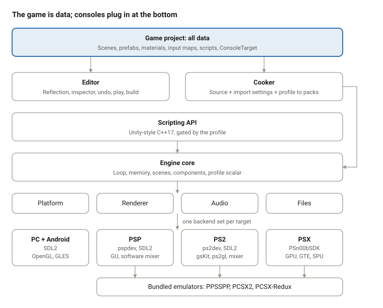
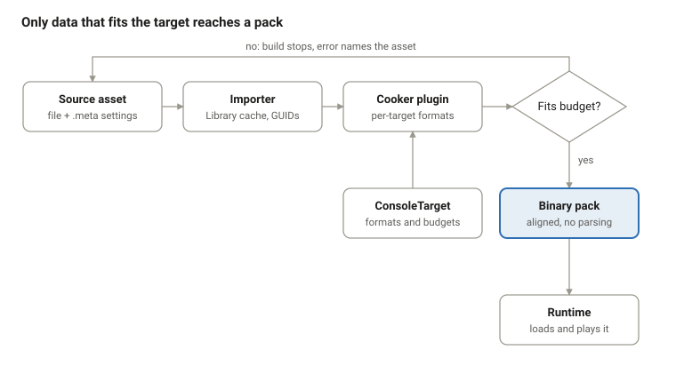

As of 2026-10-29 · Breno Freitas Aguirres
Rensga Engine is one open-source, MIT-licensed program that lets someone who knows Unity build a game once and ship it as a PSX disc image, a PSP EBOOT or a PS2 ISO, plus native Windows, Linux and Android builds of the same game.
It has three parts that ship together: a C++17 runtime engine, a Unity-style editor, and a Unity-style C++ scripting API. Each console plugs in as a target module, and each project picks one console profile (a ConsoleTarget asset) when it is created. The editor bundles PCSX-Redux, PPSSPP and PCSX2 so the Play button runs the game on the emulated console.
The guiding idea is that a game is data. Scenes, prefabs, materials, input maps, animation graphs, budgets and console profiles are all assets the editor edits and the runtime plays; code only defines behaviour and the systems that consume that data.
Intended users: hobbyists and small teams making new games for these consoles, retro-style indie developers who also want PC and Android releases, and students learning console-era constraints.
Name and icon. The software is called Rensga Engine. Its icon is a pequi fruit, from the cerrado of Goiás, Brazil.
The engine succeeds when a Unity user can create a project from a template, assemble a scene, write a script and press Play to see it running in the right emulator, without touching a console SDK.
Goals
Non-goals
Every decision in this engine follows one rule: if it describes the game or the target, it is data; code exists only to define behaviour and to turn data into running frames. The principles below apply to the engine, the editor and the API alike, and a design that breaks one of them needs a written reason.
#ifdefs.The software is layered so that data flows down and console specifics stay at the bottom: game data at the top, the editor and cooker that edit and transform it, the API and core that play it, and one set of backends per target.

The cooker's packs feed the engine core; each console's backends implement the same four interfaces, and the editor reaches consoles only through their TargetModules.
engine/
core/ target-agnostic: memory, scenes, components, loop, mixer
api/ public Unity-style API, profile-gated
profiles/ psx/ psp/ ps2/ (ConsoleTarget definitions, feature gates, budgets)
backends/
render/ gl/ gu/ gs/ gpu/
platform/ sdl/ psp/ ps2/ psx/
audio/ software/ spu/
editor/
core/ panels, reflection, undo, asset database, play, build
targets/ psp/ ps2/ psx/ (TargetModules)
tools/cooker/ shared, with per-target format plugins
templates/ psx/ psp/ ps2/
third_party/emulators/ ppsspp/ pcsx2/ pcsx-redux/ (pinned, with licenses)
Dependency rules.
core depends on nothing console-specific; it sees backends only through interfaces.api depends on core and profiles, never on a backend.editor/core never names a console; everything console-specific lives in editor/targets.api.Everything a project contains is an asset with a GUID, and everything an asset references is another GUID. The table lists the asset kinds and where each is specified in the roadmaps.
| Asset | What it holds | Editor format | Runtime form | Roadmap |
|---|---|---|---|---|
| ConsoleTarget | Profile, scalar type, resolution, budgets, texture formats, depth mode, media, allowed components | JSON | Compiled into the build as constants | Engine 1; PSX/PSP/PS2 API 0 |
| Scene | GameObject hierarchy, components, field values, prefab instances with overrides | JSON | Binary pack, fixed-capacity component arrays | Editor 1–2; API 2 |
| Prefab / variant | A reusable GameObject tree; a variant = base GUID + overrides | JSON | Merged at cook time | Editor 6 |
| Data asset | Designer-editable data for scripts (ScriptableObject equivalent) | JSON | Binary record | Editor 13 |
| Texture, model, audio | Source file + .meta with GUID and per-target import settings |
Source + JSON meta | Cooked per target | Editor 3; per-console engine cooker phases |
| Material | Texture, color, blend mode, fog, profile-gated options | JSON | Binary record | Editor 8; per-console API rendering phases |
| Input actions | Named actions mapped to the virtual gamepad per profile | JSON | Binary table | Editor 10; API 5 |
| Animation clip / Animator | Keyframes on reflected fields; state graph with parameters | JSON | Binary curves and graph | Editor 9; API 8 |
| UI canvas | RectTransform tree, images, text, buttons | Part of a scene | Part of the scene pack | Editor 10; API 10 |
| Build settings | Scenes in build, target, development flag | JSON | Not shipped | Editor 11 |
GameObjects and components. A GameObject owns a Transform and a list of components. Components are plain reflected structs; behaviour scripts derive from Behaviour. At runtime, components of one type sit in one contiguous array.
Prefab overrides. An instance stores its prefab GUID plus a list of overrides: object ID, field path, value. Loading applies the prefab, then the overrides, so editing a prefab updates every instance except overridden fields.
Reflection. Fields are declared with SERIALIZE_FIELD, RANGE, HEADER and similar macros. A header scanner generates type info at build time; runtime builds strip editor-only metadata to save memory.
Meta files. Each source file has a .meta with its GUID and import settings per target, so moving or renaming files never breaks a reference.
Cooking is a pure function of source asset, import settings and ConsoleTarget, and the budget check runs before anything reaches a console.

.meta with its GUID and per-target import settings; the importer writes a normalized copy to the Library cache, which is never committed. (Editor 3)One core, compiled per profile, runs every game; console differences are pushed down into backends behind four interfaces: platform, renderer, audio and file system.
Main loop. Fixed timestep with interpolated rendering, NTSC 60 Hz and PAL 50 Hz aware. Lifecycle order matches Unity: Awake, OnEnable, Start, FixedUpdate, Update, LateUpdate, OnDisable, OnDestroy. (Engine 1; API 3)
Memory. Arena, pool and frame allocators sized from the ConsoleTarget budget. No heap allocation per frame, 16-byte alignment for DMA. Runtime builds strip reflection metadata and any module the profile does not use. (Engine 1; PSX Engine 2)
Scalar type. All math in the core goes through the profile's scalar: float on PSP, PS2 and PC profiles, 20.12 fixed-point on PSX. The PC and Android builds of a PSX game use fixed-point too, for identical results. (PSX Engine 1; PSX API 1)
Renderer interface. High-level calls (draw this mesh with this material, this sprite batch) that carry a sort key as well as depth. Backends: gl for PC and Android (OpenGL 3.3 / GLES 3.0), gu for PSP, gs for PS2 (gsKit for 2D, ps2gl on VU1 for 3D), gpu for PSX (ordering tables and the GTE). (Engine 2 and 7; PSP Engine 2 and 6; PSX Engine 3 and 7)
Audio backends. An AudioBackend interface with two kinds: a software mixer on SDL audio (PC, Android, PSP, PS2) and hardware voices (SPU on PSX, optionally SPU2 on PS2). Music streams from disc on every target; on PSX it plays XA tracks. (Engine 4; PSX Engine 5)
Scenes and streaming. Scenes load from packs; additive loading becomes area streaming on PSX, where a whole level rarely fits in 2 MB. (Engine 5; PSX Engine 8; API 9)
Platform layer. SDL2 on PC, Android, PSP and PS2; a custom layer on PSn00bSDK for PSX, which has no SDL port. Input maps to one virtual gamepad. (Engine 1; PSP Engine 1; PSX Engine 2)
A project has exactly one profile (PSX, PSP or PS2) and always builds for that console plus Windows, Linux and Android. The profile is chosen from a template when the project is created and is stored in its ConsoleTarget asset.
| PSX | PSP | PS2 | |
|---|---|---|---|
| Scalar | 20.12 fixed-point | float | float |
| RAM / VRAM | 2 MB / 1 MB | 32 MB budget (64 MB on slim) / 2 MB | 32 MB / 4 MB |
| Native resolution | 320x240 | 480x272 | 640x448 |
| Depth | Ordering tables (sort keys) | Z-buffer | Z-buffer |
| Lights per object | 3 (GTE) | 4 (hardware) | per ps2gl |
| Characters | Segmented rigid models | Hardware skinning, 8 bones per draw | CPU skinning |
| Audio backend | SPU hardware voices, XA music | Software mixer | Software mixer |
| SDK / platform | PSn00bSDK, custom layer | pspdev + SDL2 | ps2dev + SDL2 |
| Output | BIN/CUE | EBOOT.PBP | ISO |
| Bundled emulator | PCSX-Redux (OpenBIOS) | PPSSPP (no BIOS needed) | PCSX2 (user BIOS) |
TargetModule interface. Each console registers one module with the editor that supplies its importers, cooker format plugin, preview rules, inspector gating rules, validator, packager and emulator launcher. Editor core never names a console; if a console needs something the interface lacks, the interface grows. (PSP Editor 0; PSX Editor 0)
Profile gating. A feature the profile lacks is hidden or greyed in the inspector with a reason, rejected by the validator, and a compile error with a hint in scripts. (PSP API 0; PSX API 0)
PC enhancements. PC and Android builds render at the native resolution scaled up by default. Optional enhancements (higher resolution, perspective-correct textures on PSX) are project settings, off by default.
The editor is a data editor: every panel views or changes assets through reflection and the undo stack, and it runs on Windows and Linux using Dear ImGui (docking) on SDL2 and OpenGL.
Panels. Hierarchy, Scene view with ImGuizmo handles, Game view, Inspector built from reflection, Project window over the asset database, Console, VRAM map, Animation window, Animator graph (imnodes), Profiler, Build Settings, Project Settings and the emulator manager. (Editor 0–13; PSX Editor 2)
Two ways to play. The Play dropdown chooses between Play in editor (a PC preview through the profile's preview shader, with live budget bars) and Play on console (a development build running in the bundled emulator). Stop reverts play-mode changes in the editor preview. (Editor 5; Emulator Play roadmap; PSP Editor 3; PSX Editor 3)
Scripting workflow. Create › C++ Script makes a Behaviour from a template. Game code is a separate library that the editor rebuilds and hot-reloads on save by serializing script state, swapping the library and restoring state. Release builds link the same code statically. (Editor 4)
Build pipeline. Validate budgets, cook for the target, compile in the console's Docker toolchain, package (BIN/CUE, EBOOT.PBP, ISO, exe, AppImage, APK), then optionally launch. Play skips packaging and boots the executable directly with assets read from the project folder. (Editor 11; Emulator Play 2)
Templates. New Project offers PSX, PSP and PS2 templates, each with its ConsoleTarget, a primitive character, a primitive test level and a shared third-person controller script that compiles for both float and fixed-point profiles. (PSX, PSP and PS2 Template roadmaps)
Extensibility. Projects add custom inspectors, editor windows and menu items in C++, registered by macro and hot-reloaded with game code. (Editor 13)
The API is one Unity-style C++17 surface for every profile: the same class and method names everywhere, with features gated by the project's profile.
class PlayerController : public Behaviour {
REFLECT(PlayerController)
SERIALIZE_FIELD(Scalar, speed, 5) RANGE(0, 20)
Ref<CharacterController> cc;
void Start() override { cc = GetComponent<CharacterController>(); }
void Update() override {
Vector3 move(Input::GetAxis("Horizontal"), 0, Input::GetAxis("Vertical"));
cc->Move(move * speed * Time::deltaTime());
}
};
Design rules. Unity names are kept (GetComponent, Instantiate, Destroy, Raycast, StartCoroutine). C++ has no properties, so properties become getters and setters. No exceptions, no per-frame allocation. (API 0)
Ref handles. Scripts hold Ref<T>, a generational handle that reads as null after Destroy, like Unity's fake null, so scripts never touch a dangling pointer. (API 0 and 2)
Scalar. Scripts use the Scalar type and the math classes; on PSX they are fixed-point and using float in game code is a compile error with a hint. (PSX API 0–1)
Data hooks. Attribute macros (SERIALIZE_FIELD, RANGE, HEADER, TOOLTIP, REQUIRE_COMPONENT) put script fields in the inspector, and serialized events bind script methods to other objects in the editor, so behaviour is tuned as data. (API 4 and 11)
Coverage. Math, object model, lifecycle, time, coroutines, input, physics, rendering, animation, audio, scenes, saves, UI, platform and profiling, with per-profile additions: PSP system services and optional ad hoc play; PSX segmented meshes, XA music, memory card saves and optional FMV. (API 1–13; PSP API; PSX API)
Every console build runs inside a pinned Docker toolchain and every emulator is a pinned bundled binary, so a project builds and plays the same on every contributor's machine.
| Target | Toolchain | Emulator | BIOS | Automated boot test |
|---|---|---|---|---|
| PSX | PSn00bSDK (mipsel GCC), mkpsxiso | PCSX-Redux | OpenBIOS, bundled | Public CI |
| PSP | pspdev (psp-gcc), SDL2 | PPSSPP | None needed | Public CI, headless |
| PS2 | ps2dev (EE GCC), PS2SDK, gsKit, ps2gl, SDL2 | PCSX2 | User's own dump | Self-hosted runner with a maintainer's private dump |
| PC / Android | Host compilers, Android NDK via Gradle | None | None | Public CI |
Emulator sandboxing. Each project gets its own emulator config folder and memory card, so play sessions never change the user's personal emulator settings. (Emulator Play 0)
Test layers. Unit tests for math and core on every target; API tests run inside the emulators and compared against the PC build of the same profile; template projects boot on every engine change; real-hardware passes before each release. (API 13; PSP API 7; PSX API 7; Template roadmaps)
Known limits. OpenBIOS does not handle memory cards yet, so PSX development builds also save to a host file. Public CI cannot boot PS2 builds because the PS2 BIOS cannot be distributed.
The engine, editor, API, tools and templates are released under the MIT license, so games made with them can use any license their authors choose.
Thirteen roadmaps cover the whole program; most run in parallel once the shared core exists, so the totals below overlap rather than add up. Phase references elsewhere in this document point into these roadmaps (for example "PSX Engine 3" is phase 3 of the PSX engine roadmap). Estimates assume about 15 hours a week. The roadmap pages are in ../roadmaps/.
| Roadmap | Phases | Estimate | Starts after | Scope |
|---|---|---|---|---|
| Engine (shared core + PS2 backend) | 0–9 | ~36 wk | — | Toolchains, core, renderer interface, cooker, audio, gameplay, 2D slice, PS2 3D, ship |
| Editor | 0–13 + TargetModule | ~52 wk | Engine 3 | Shell, reflection, scene, assets, scripting, play mode, prefabs, 2D/3D tools, animation, UI, build, profiler, extensibility |
| API | 0–13 | ~33 wk | Alongside engine and editor | Unity-style C++ API, profile-gated |
| PSP Engine | 0–8 | ~21 wk | Engine 0–6 | pspdev target, GU backend, cooker plugin, 3D, packaging |
| PSP Editor | 0–7 | ~13 wk | Editor 0–5 | PSP module, template, import, preview, Build and Run in PPSSPP |
| PSP API | 0–7 | ~10 wk (+3 optional) | API 0–2 | PSP profile, input, services, optional ad hoc |
| PSX Engine | 0–9 | ~28 wk | Engine 0–6 | PSn00bSDK target, fixed-point core, GPU and GTE backends, SPU, streaming |
| PSX Editor | 0–7 | ~14 wk | Editor 0–5 | PSX module, VRAM map, PSX look preview, Build and Run in PCSX-Redux |
| PSX API | 0–7 | ~12 wk (+2 optional) | API 0–2 | Fixed-point rules, rendering limits, saves, optional FMV |
| Emulator Play | 0–5 | ~7 wk (+3 optional) | First console's Build and Run | Play button running the bundled emulator |
| PSP Template | 0–4 | ~5.5 wk | PSP Engine 6 | Shared primitive generator and controller, PSP sample |
| PSX Template | 0–4 | ~4.5 wk | PSX Engine 7 | Segmented primitive character, tiled level |
| PS2 Template | 0–4 | ~4.5 wk | Engine 7 | Dual-analog controller, blob shadow |
Build order.
The biggest risk is scope: three consoles, three platforms, an editor and an API is well over a year of part-time work, so each track must ship something usable on its own.
| Risk | Impact | Mitigation |
|---|---|---|
| Shared core not ready for PSX constraints | PSX forces a core rewrite late | Profile scalar, sort keys and AudioBackend are rules from Engine phase 1 |
| Console code leaking into editor core | Each new console costs more than the last | TargetModule boundary; CI check that editor core never names a console |
| PSn00bSDK is still marked work in progress | Missing or changing PSX features | Pin a version; contribute fixes upstream; keep the PSX platform layer thin |
| Emulators hide hardware bugs | Games that crash on real consoles | Real-hardware pass before every release, per target |
| GPL emulator licensing | Legal problems for the MIT editor | Separate processes only; licensing review before any in-process mode |
| PS2 cannot be boot-tested in public CI | PS2 regressions found late | Self-hosted runner with a maintainer's private BIOS |
| Reflection codegen complexity | Slows every later editor feature | Build it early (Editor 1), test it against every component type |
| One maintainer, large scope | Project stalls | PSP-first vertical slice; recruit contributors around each target module |
Open questions
| Term | Meaning |
|---|---|
| ConsoleTarget | The asset holding a project's console profile: scalar type, resolution, budgets, formats, allowed components |
| Profile | PSX, PSP or PS2; decides which features the API and editor offer |
| TargetModule | A console's plugin to the editor: importers, cooker plugin, preview, rules, packager, emulator launcher |
| Cooking | Turning source assets into a target's binary formats and packs |
| Pack | A binary file of cooked assets the runtime loads without parsing |
| Scalar | The profile's number type: float, or 20.12 fixed-point on PSX |
| Sort key | Per-draw ordering value used by renderers without a z-buffer |
| Ordering table | The PSX GPU's list of primitives sorted back to front |
| CLUT | Color lookup table, the palette for 4-bit and 8-bit textures |
| GTE / VU1 / GU | The PSX geometry coprocessor, the PS2 vector unit, the PSP graphics API |
| SPU / XA | The PSX sound chip / its streamed CD audio format |
| Ref<T> | A handle to an engine object that reads as null after the object is destroyed |
| Data asset | Designer-editable data for scripts, the ScriptableObject equivalent |
| Segmented model | A character made of rigid parts, one per bone, used on PSX |
| OpenBIOS | PCSX-Redux's MIT-licensed PS1 BIOS replacement |